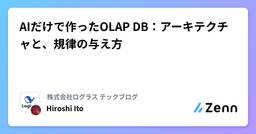
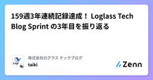

株式会社ログラス テックブログのフィード
https://zenn.dev/p/loglass
株式会社ログラスは「良い景気を作ろう。」をミッションに、企業経営を推進する次世代型経営管理クラウド「Loglass 経営管理」を開発し提供しています。
フィード

AIだけで作ったOLAP DB：アーキテクチャと、規律の与え方
株式会社ログラス テックブログのフィード
!この記事は毎週必ず記事がでるテックブログ Loglass Tech Blog Sprint の161週目の記事です！4年連続達成まであと51週となりました！こんにちは、ログラスのいとひろ（@itohiro73）です。2026年7月23日、Findy社主催の AI DevEx Conference 2026 に登壇しました。「『動くだけ』のその先へ 〜 AI駆動開発で品質と速度を両取りする温故知新な新手法 〜」というタイトルで40分お話ししました。アーカイブが公開されていますので、よろしければこちらからどうぞ。https://conference.findy-code.io/...
1日前

159週3年連続記録達成！ Loglass Tech Blog Sprint の3年目を振り返る
株式会社ログラス テックブログのフィード
毎週必ず記事が出る "Loglass Tech Blog Sprint"3年連続記録達成！だぁああああああああああああああああhttps://zenn.dev/loglass/articles/7298a3cd4c5fc6詳細は上記の記事を参照いただければと思いますが、ざっくりいうと毎週記事をひたすら書き続けるという取り組みです。タイトルにある通り無事3年連続記事を公開することができたので、3代目編集長である私が、振り返りの記事を書いています。ブログの執筆が途絶えた場合は連続記録が途絶えまたゼロからのスタートとなります。途絶えた場合はポストモーテム（振り返り）を実施し、ポス...
1日前

品質メトリクスの運用、どうしてる？ ―― データを疑い、リスクを拾う。ログラスQAエンジニアの活動 2
2
株式会社ログラス テックブログのフィード
こんにちは、ログラスQAエンジニアの森島です。今月でログラスに入社して1年が経過しました。ちょうど良い節目なので、この記事ではLoglass 経営管理のプロダクト開発部（以降、経営管理プロダクト部と呼ぶ）に所属するQAエンジニアとして、最近取り組んでいる活動を紹介します。中心になるのは、エンジニアリングマネージャー（以降、EM）の飯田が定義した品質メトリクス（以降、品質KPIと呼ぶ）に関連する取り組みです。 品質KPIについて経営管理プロダクト部では、品質KPIとして事業と品質を紐づけるメトリクスを継続的に計測しています。品質KPIを大別すると、「インシデントが速く収束できて...
4日前

メモリに載らないGROUP BYをDuckDBはどう処理するのか
株式会社ログラス テックブログのフィード
!この記事は毎週必ず記事がでるテックブログ Loglass Tech Blog Sprint の160週目の記事です！4年連続達成まであと52週となりました！ログラスの龍島(@hryushm)です。先日スイカを一玉いただく機会があったのですが、とても大きいので一度に全部は食べきれず、切り分けて冷蔵庫に入れて数日かけて食べました。ということで今日はメモリに載りきらないデータの処理方法の話です。 はじめに先日、DuckDBの開発元であるDuckLabsがAWSに加わることが発表されました[1]。そのDuckDBは、メモリより大きなデータを扱うのが得意だと言われます。公式ドキュメン...
10日前
「index を張ったのに使われない」には理由がある — 述語が Index Cond になるための 4 つの関門
株式会社ログラス テックブログのフィード
!この記事は毎週必ず記事がでるテックブログ Loglass Tech Blog Sprint の159週目の記事です！この記事で3年間連続達成しました！🎉🎉🎉🎉🎉こんにちは。株式会社ログラスで「Loglass AI IR」という新規事業のエンジニアをしている西代です。クエリを少し書き換えただけで、それまで効いていた index が急に効かなくなる。index はちゃんと張ってある。WHERE の条件も見た目は前とほとんど同じ。それなのに EXPLAIN を見ると index はどこにも登場せず、テーブルが全件スキャンされている。この現象を調べる機会があったので、Postg...
16日前
AIプロダクトの新規事業、立ち上げから1年の振り返り
株式会社ログラス テックブログのフィード
!この記事は毎週必ず記事がでるテックブログ Loglass Tech Blog Sprintの 158週目 の記事です！3年間連続達成まで 残り1週 となりました！ 背景約1年前から自分は、「Loglass AI IR」という新規事業のプロダクト開発責任者を担当しています。PdM・デザイナー・エンジニアからなるプロダクトチームのマネージャーで、事業全体は上司にあたる事業責任者が見ています。その前は、既存事業でエンジニアリングマネージャー（EM）をしていました。仕事は採用・育成・プロジェクトマネジメントが中心で、プレイングはほとんどしていませんでした。その延長で考えれば、新規...
22日前
gRPC / Connect / HTTP/2 を完全に理解したい
株式会社ログラス テックブログのフィード
はじめに!この記事は毎週必ず記事がでるテックブログ Loglass Tech Blog Sprint の157週目の記事です。3年間連続達成まで残り2週となりました！こんにちは、ログラスの小林です。直近 RESTではなく、protoベースのスキーマ駆動開発を行ってします。proto を書いて buf gen するとクラサバにコードが生成されるgRPC は HTTP/2 で通信するブラウザからは HTTP/2 が使えないので Connect RPC と HTTP/1.1 で通信をというざっくり理解でここまで来てしまったので、今回は歴史や技術的な背景をリサーチし、...
1ヶ月前
AI 時代の認可ハーネス
株式会社ログラス テックブログのフィード
!この記事は毎週必ず記事がでるテックブログ Loglass Tech Blog Sprint の156週目の記事です！3年間連続達成まで残り3週となりました！以前、DDD における認可の扱いについて記事を書いていたんですが、こんな一文を残していました。（呼び出しを強制する方法は言語やフレームワークによって変わってくるため、この記事では触れません）https://zenn.dev/loglass/articles/76e559f1a13776「認可の呼び忘れをどう防ぐか」について書こうと思いながら、はや3年も経っていました。その間に Cedar や OpenFGA、Sp...
1ヶ月前
「ページが応答しません」を記録する window.crashReport を試す
株式会社ログラス テックブログのフィード
!この記事は毎週必ず記事がでるテックブログ Loglass Tech Blog Sprint の155週目の記事です！3年間連続達成まで残り4週となりました！ はじめにフロントエンドでは、デバイスの性能差がそのまま体験に影響として出てきます。操作の快適さだけでなくメモリの使用量にも気を配る必要があり、非常に重い状態が続くとページ自体が応答しなくなることもあります。DatadogやSentry等監視ツールを導入することで、Webページ上でのパフォーマンスメトリクスを取得できますが、あくまでページ内のアクティビティであり「ページが応答しなくなった」という事象までは記録されませ...
1ヶ月前
障害の影響調査と報告のための履歴データモデル
株式会社ログラス テックブログのフィード
!この記事は毎週必ず記事がでるテックブログ Loglass Tech Blog Sprint の154週目の記事です！3年間連続達成まで残り5週となりました！ 障害はゼロにできない。原因調査のための履歴データが必要どれだけテストをしても障害を完全になくすことはできません。ただ、障害が発生してしまったときに迷惑をかけてしまったユーザーを絞り込んで適切な情報を連絡することはできます。しかし、この調査ができるかどうかは実装時に障害調査まで考えが及んでデータを設計しているかどうかで決まります。特にB2Bのシステムでは、障害発生時にユーザー側で対応すべきことが多くあります。障害の...
2ヶ月前
AI時代のエンジニアリングマネージャーのあり方｜外部品質編 〜品質の可視化を、現場と経営をつなぐ形にするまで〜
株式会社ログラス テックブログのフィード
!この記事は毎週必ず記事がでるテックブログ Loglass Tech Blog Sprint の153週目の記事です！3年間連続達成まで残り6週となりました！こんにちは、ログラスの飯田(@ysk_118)です。ここ数年、AIによってコードを書く速度はずいぶん上がりました。一方で、「品質向上に対してどのようにアプローチしていくのか」という問いも、多くの現場で同時に立ち上がっているように思います。AIによる開発現場の進化の渦中において、エンジニアリングマネージャーはどう変化すべきなのか？品質にとどまらずさまざまな観点でアップデートが求められていると感じていますが、まずは直近で取り...
2ヶ月前
SRE NEXT 2026で「依頼文化をやめる日」というタイトルで登壇してきました
株式会社ログラス テックブログのフィード
はじめに株式会社ログラスでSRE / Engineering Managerをしている勝丸（@shin1988）です。2026年7月10日・11日に開催されたSRE NEXT 2026に、2日間現地で参加してきました。今年のテーマは「Inclusive SRE」。SREsというロールにとらわれず、Site Reliability Engineeringに関わるすべてのエンジニアが学べる場にしたい、という思いが込められたテーマです。私は昨年に続き2年連続でスピーカーとして登壇する機会をいただいたので、登壇の振り返りと、イベント全体の感想を書きたいと思います。 登壇についてそ...
2ヶ月前
AIに「レビューして」はもう古い？「敵対的検証」のすすめ
株式会社ログラス テックブログのフィード
!この記事は毎週必ず記事がでるテックブログ Loglass Tech Blog Sprint の152週目の記事です！3年間連続達成まで残り7週となりました！こんにちは、ログラスの松岡(@little_hand_s)です。 3行まとめ「レビューして」でも指摘は返ってくる。「敵対的検証して」は課題がある前提で反証を試み、判定と根拠まで返してくるのが違い敵対的検証はClaude Code公式も推奨するパターン。筆者のClaude Code環境では、一言でサブエージェントによる多視点検証が走った指摘は鵜呑みにしない。採否を決めるのは人間。この記事自身も敵対的検証を通して書...
2ヶ月前
SRE NEXT 2026に登壇・参加してきました
株式会社ログラス テックブログのフィード
はじめにこんにちは、ログラスでSREをしている見形（@mekka）です。2026年7月10〜11日にTOC有明で開催された SRE NEXT 2026 に、登壇者として、また一参加者として参加してきました。今年のテーマは「Inclusive SRE」。経験豊富なSREだけでなく、マネージャーやSREに取り組み始めたばかりのチーム、開発と運用を兼ねるエンジニアまで、Roleにとらわれず信頼性に関わる誰もが学べる場を目指す、というものです。この記事では、登壇の内容と、参加して感じたことをまとめます。 登壇内容「『ちゃんとやっている』は独りよがりだった ― 不安に寄り添うイン...
2ヶ月前
受身気質な私がEMはじめました
株式会社ログラス テックブログのフィード
!この記事は毎週必ず記事がでるテックブログ Loglass Tech Blog Sprint の151週目の記事です！3年間連続達成まで残り8週となりました！5月からエンジニアリングマネージャー（EM）になりました。@jamgodtree です。 はじめに以前「受身気質な私がリーダーという役割で実践したこと 4選」 zenn記事をだしてから3年経ちました。色んなことを経験して、EMとしてこの5月から働くことになりました。この記事を書いた当時はリーダーになりたてで、とても不安ななかでの挑戦でやみくもだったことを思い出します。今はEMになって、不安というより「どんな価値を...
2ヶ月前
AI活用でGitHub Actionsのコストが増加。EKS×ARCでSelf-Hosted Runnerを構築してみた
株式会社ログラス テックブログのフィード
!この記事は毎週必ず記事が出るテックブログ Loglass Tech Blog Sprint の 150 週目の記事です！3 年間連続達成まで残り 9 週となりました！こんにちは。ログラスの Engineering Manager の勝丸（@shin1988）です。AI 活用が進むにつれて、ログラスでは GitHub Actions の利用量が増加し、Hosted Runner の費用が無視できない規模になってきました。そこで、コスト最適化の POC として EKS 上に Self-Hosted Runner（ARC: Actions Runner Controller）を構築...
3ヶ月前
E2E テストを読めるカタログにする ― AI 時代の振る舞い管理
株式会社ログラス テックブログのフィード
!この記事は毎週必ず記事が出るテックブログ Loglass Tech Blog Sprint の 149 週目の記事です！3 年間連続達成まで残り 10 週となりました！ 🌱 はじめにこんにちは、ログラスでバックエンドの数値計算まわりの開発をしている wamomo です。AI にコードを書いてもらう機会が増えたこの 1 年で、E2E テストの扱い方がチーム内で少しずつ変わってきました。この記事では、その変化のひとつとして、E2E テストの内容を Markdown のカタログとして書き出して運用している話を共有したいと思います。 💡 AI と一緒に書く時代に、人間が守るべ...
3ヶ月前
Platform Engineeringをどう進めてきたか ─ 使われるプラットフォームにするために大事にしたこと
株式会社ログラス テックブログのフィード
!この記事は毎週必ず記事がでるテックブログ Loglass Tech Blog Sprint の148週目の記事です！3年間連続達成まで残り11週となりました！ はじめにこんにちは。株式会社ログラスでSREをしている中井(elmo)です。ログラスでは現在、Platform Engineeringの取り組みを進めています。以前、SREチームの見形(mekka)がなぜPlatform Engineeringに取り組むことになったのか、そして1年間で何が変わったのかについて紹介しました。https://zenn.dev/loglass/articles/f4dda877788...
3ヶ月前
Spring Boot で実装する動的な可視性タイムアウトのSQSワーカー
株式会社ログラス テックブログのフィード
!この記事は毎週必ず記事がでるテックブログ Loglass Tech Blog Sprint の147週目の記事です！3 年間連続達成まで残り12週となりました！ はじめに株式会社ログラスでバックエンドエンジニアをしている櫻井です。この記事では、以下の内容を解説します。Spring Boot で動的な可視性タイムアウトを持つSQSワーカーの実装方法背景となる設計の考え方 SQSワーカーの構成上図のように、APPサーバで受け付けた重い処理をSQSメッセージを通して、Workerで処理する構成です。実装は、Spring Boot/KotlinでSQSメッセー...
3ヶ月前
言葉が組織をコードする - 組織を捉えるメタファーの歴史
株式会社ログラス テックブログのフィード
!この記事は毎週必ず記事がでるテックブログ Loglass Tech Blog Sprint の146週目の記事です！3年間連続達成まで残り13週となりました！ はじめに最近「勝ち筋」という表現をよく目にするな、とふと感じました。言葉ひとつですが、例えば「戦略」「シナリオ」といった類似の表現ではなくその言葉を選ぶ必然性を考えてみると、組織内で使われる言葉は組織にどう影響を与えるのか、ふと気になりました。気になって、メタファー論を調べる中で出会ったガレス・モーガン『組織のイメージ (Images of Organization, 1986)』を元に組織で使われるメタファーに...
4ヶ月前